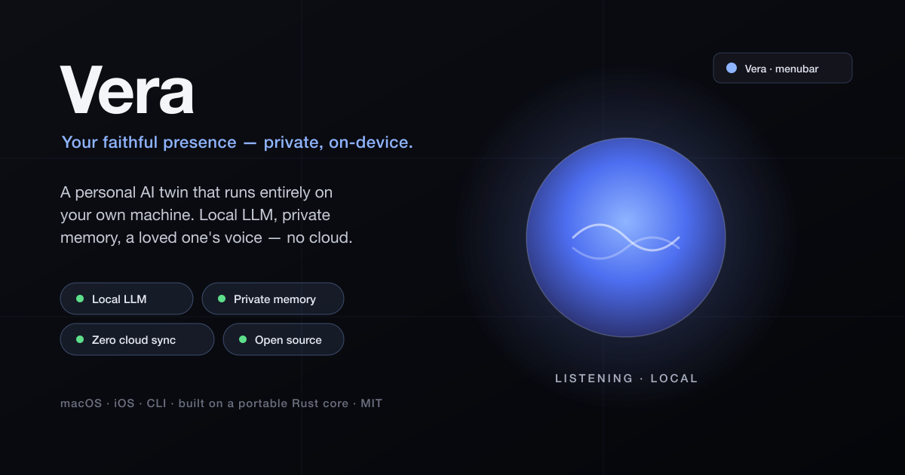

Your faithful presence — private, on-device.
Vera reasons with a local LLM, keeps its own private memory of how you live, and — if you want — speaks in a loved one's cloned voice. Nothing syncs to a cloud. Nothing leaves your device unless you allow it.
Reasoning runs on a model on your machine (Ollama, LM Studio, Apple Intelligence). No prompts sent to a cloud by default.
What it learns about you is a local file, owner-only, on your device — never uploaded.
No account, no server, no telemetry. There is nothing to sync and nothing to leak.
A loved one's voice, cloned locally (Coqui XTTS). The recording never leaves your Mac.
A built-in "Brain" view shows its faculties and how a reply forms — from your real local data.
Policy-driven routing sends each request to the best local model for the job — inspectable, never cloud.
One question, every voice. Ask all your twins at once — your mom, your dad, a mentor — and see each take side by side. Like the voices in your head, made explicit.
# ask everyone the same question $ python -m cognitive_twin council "should I take the job offer?" council › "should I take the job offer?" Anita » (qwen2.5:7b) Take it — but negotiate the remote days first. You'll regret not asking. Dad » (llama3.2) Money isn't everything. What's the commute do to your evenings? — 2 voices weighed in. The choice is yours.
Each twin answers as themselves, from its own persona and its own private memory.
It never changes which twin is active, adds no dependencies, and runs entirely on your machine.
In the interactive chat, /council <question> does the same without leaving the session.
Not just answer when asked — it reaches out first, remembers you, and can act (permissioned).
A local model and a couple of commands. No account, no keys.
# 1. install Ollama (https://ollama.com) and pull a tool-capable model $ ollama pull qwen2.5:7b # or llama3.2, etc. # 2. make it yours — guided first-run setup (name, persona, voice) $ python -m cognitive_twin setup # 3. talk to it $ python -m cognitive_twin "good morning" $ python -m cognitive_twin council "what should I do this weekend?" $ python -m cognitive_twin voice --web # 🎙 Siri-style voice UI
Want the native Mac app? cd macos/Vera && ./build-app.sh && open "Vera.app".
Full docs, architecture, and the honest "what works today" table live in the
README.